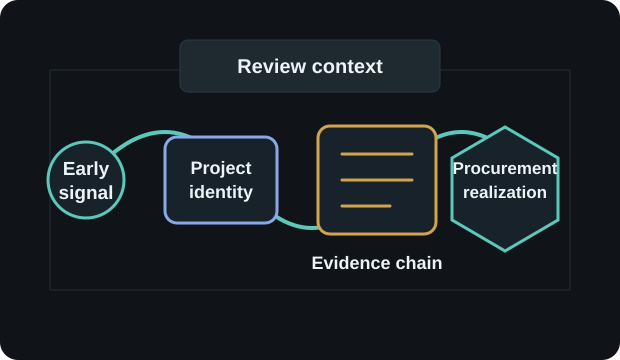

INTELIGÊNCIA DE PROCUREMENT · IRLANDA & PORTUGAL

Deal Hunter
Veja oportunidades de infraestrutura antes de o tender aparecer.
Para equipas de infraestrutura, construção, obras públicas e procurement na Irlanda e em Portugal.
Explorar Deal Hunter